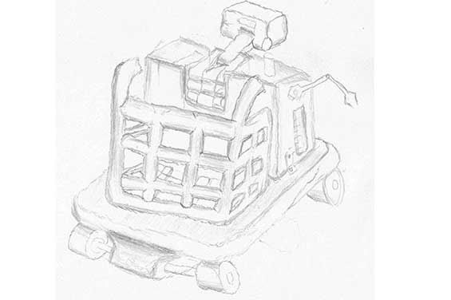
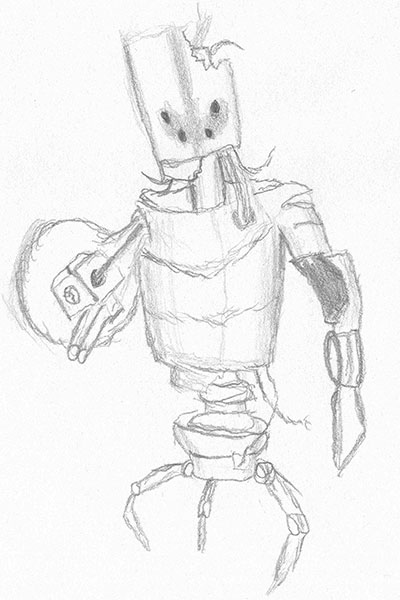
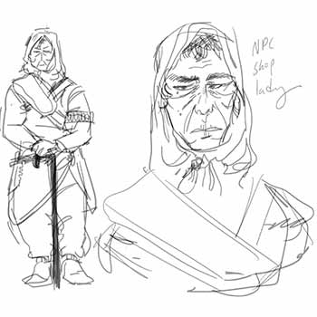
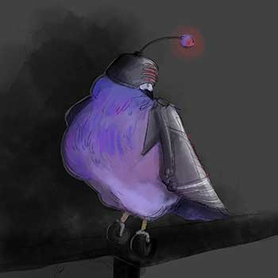
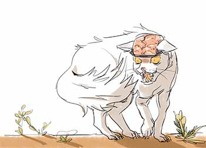
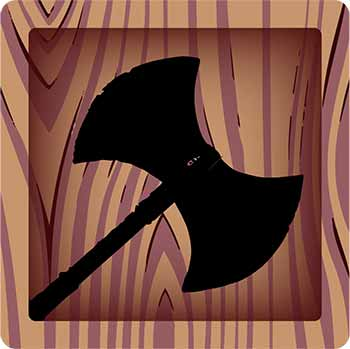
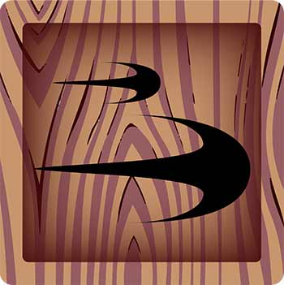
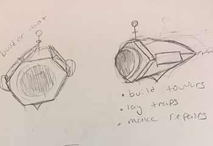
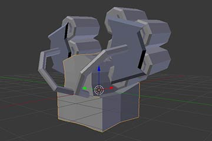

With so much artwork being developed for the projects of the game development association we had a lot of artwork that ranged from concept art that didn't make it far into development to resources that was created for games but wasn't used because of time constraints.
Project Vega Artwork
Here are some of the extra early concepts that was made for project Vega that either didn't necessarily make the cut but helped setup possible ideas for future implementations
This first robot was one of the very designs created when the game development association. During this time in developing Project Vega we weren't entirely sure what sort of art style we necessarily wanted for the robots. We weren't sure if we wanted a sci fi robot design or if we wanted something that looked scrapped together. This robot was the latter, to the point where we gave the robot the description of "If Wall-E was made by Ed, Edd, and Eddy." This robot was designed by Dylan Plomondon
Another concept that didn't make the final cut purely because we didn't have the original bots working was the amalgamation bot. This concept also designed by Dylan Plomondon was the idea that if the character died too many times there was a chance an amalgamation of destroyed bots would form to be a rare boss. This specific variation was the combination of the Jerome and Brutis robots designed by Morgan Jones and the Tanker and Wander robots designed by Dylan Plomondon.
Project Vega also had other concepts not fully implemented that weren't designed by Dylan Plomondon such as the NPC character possibly named Jidda (not 100% if that is name we went with, was only actual name I could find) who was originally designed by John Eljaouhari. This would have been the only actual human you would ever meet in the game and would have served as a way to learn a bit more about the world and potentially be an ally if you helped her out.
 The last major concept from Project Vega was the other main enemy type that would have severed as the primary enemies of the game that being cybernetic animals. A few concepts for these creatures were designed one being a robotic pigeon designed by Kaitlin Quick and colored by John Eljaouhari as well as a mastermind cybernetic cat called Chrome Dome which was colored by John Elijaouhari. We never really got to the modeling phase of these characters because of time constraints.
Project Sirius Artwork
For project Sirius we didn’t have too much in terms of extra artwork. the only artwork that wasn't included was primarily a few designs for the UI menus.
The UI elements designed for the game were primarily focused on indicating when the character would be able to reuse a certain move or indicate which abilities were currently equipped. Here we have the UI element for the Axe as well as the dash Attack Snow White could use. Both of these were originally designed by Amelia Falldorf.

Project Altair Artwork
For Project Altair the extra artwork we never really got to adding into the game was the attacking enemies as well as the means in which the turrets were developed that being the building drones and the building animation.
When developing Project Altair we originally wanted some restrictions on how fast a tower could become active once it was placed onto the map to further increase strategy as well as prevent the player from building to many towers at a time. This resulted in the team creating a building animation for when a tower was to be built. However, due to time constraints as well as texturing issues, the animation was never fully implemented.
Along with the idea of constructing the towers came the idea for the freighter to have constructions bots. They would have been used within the UI to basically show a building period until the most recent tower placed was fully constructed.
The only other artwork that wasn't include on the project Altair page were a few extra angles of the two turrets that were built for the game.